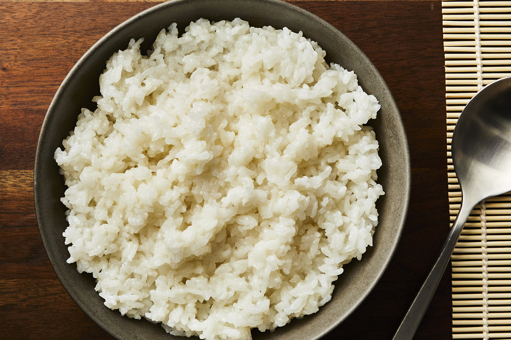

Sushi Rice

Sushi rice, made with sugar and vinegar.
Ingredients
- 2 cups uncooked white rice
- 3 cups water
- 1/4 cup sugar
- 1/4 cup rice vinegar
- 1 and 1/4 teaspoons salt
Directions
- Mix together the rice vinegar, sugar, and salt until dissolved in a small bowl.
- Rinse the rice.
- Drain the rice and add it into a saucepan with 3 cups of water.
- Cover and bring rice to a boil over high heat, then reduce heat to low and simmer for 15 minutes.
Remove from heat and allow to stand, covered, for 5 minutes.
- Transfer rice into a bowl. Stir in vinegar mixture until well incorporated.
Allow to cool at room temperature.
Return to main page